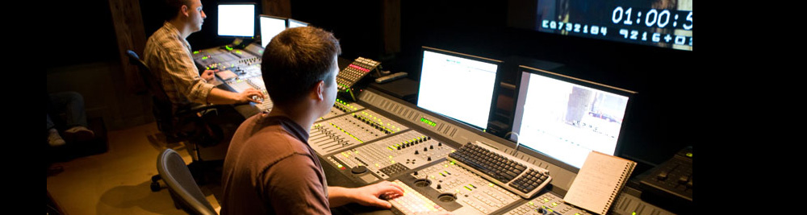
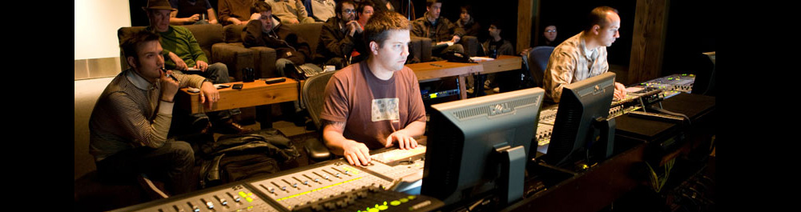
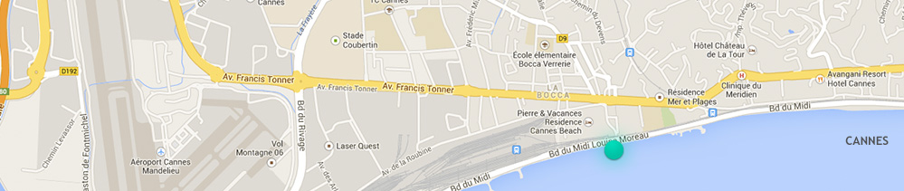

<!DOCTYPE html>
<html lang="fr">

<head>
    <meta charset="UTF-8">
    <meta name="viewport" content="width=device-width, initial-scale=1.0">
    <link rel="stylesheet" href="css/style.css">
    <title>Soundesign'studio</title>
</head>

<body>
    <div class="page">
        <header>
        <div class="header-logo">
            <h1>soundesign'studio</h1>
            
        </div>
        <nav class="header-nav">
            <ul>
                <li><a href="#">accueil</a></li>
                <li><a href="#">le studio</a></li>
                <li><a href="#">nos métiers</a></li>
                <li><a href="#">contact</a></li>
            </ul>
        </nav>
    </header>
    <div class="main">

        <!-- bandeau image -->
        <div class="image-band" id="band01">
            
        </div>

        <!-- sous-titre / slogan -->
        <div class="subtitle">
            <p>
                Parce qu’un son de qualité est aussi important pour votre image</br>
                ne le confiez pas à n’importe qui.
            </p>
        </div>

        <!-- bandeau 3 petites images -->
        <div class="gallery-band" id="band02">
            
            
            
        </div>

        <!-- premier bloc texte -->
        <section>
            <h2>Notre métier, votre son.</h2>
            <p>
                Le design sonore est l'art d'utiliser des éléments sonores afin d'obtenir un effet désiré. Il est
                employé dans une variété de disciplines comme le cinéma, le théâtre, l'enregistrement et le mixage de
                musique, le concert, le développement de jeux vidéo ou la publicité.
            </p>
            <p>
                Le design sonore implique généralement la manipulation d'objets musicaux ou sonores.<br>
                Un Designer sonore (en anglais, sound designer) est une personne qui pratique l'art de la conception sonore.
            </p>
            <p>
                — Wikipedia
            </p>
        </section>

        <!-- bandeau image -->
        <div class="image-band" id="band03">
            
        </div>

        <!-- 2e, 3e et 4e bloc texte -->
        <section>
            <h2>Cinéma</h2>
            <p>Dans la production cinématographique, le designer sonore est un membre de l'équipe du film, responsable
                de l'aspect original de la bande-son. L'appellation n'est contrôlée par aucune organisation. Les termes
                de sound design et sound designer existaient déjà au théâtre et ont été introduit au cinéma lorsque
                Francis Ford Coppola demanda à Charlie Richmond, sound designer résident du American Conservatory
                Theatre (ACT) de San Francisco de rééditer les bandes du film Le Parrain, en 1972. En France, au début
                des années 1960, le compositeur Michel Fano défend l'idée de « continuum sonore », inspirée par celle
                de partition sonore du compositeur Edgard Varèse, en travaillant entre autres sur les films d'Alain
                Robbe-Grillet.</p>
        </section>

        <section>
            <h2>Multimédia</h2>
            <p>À l'avènement des CD-Roms, le multimédia a permis l'essor du design sonore auquel le cinéma avait
                rarement recours, du moins en France dès 1995. </p>
            <p>Contrepoint de l'image, il permet d'humaniser les machines en ayant recours à la programmation aléatoire
                ou déterminée des événements tout en proposant une charte sonore comme il existe une charte graphique
                pour chaque projet. Le mouvement s'est prolongé sur Internet dans une moindre mesure, le son devenant
                gênant pour de nombreux utilisateurs surfant depuis leur lieu de travail !</p>
        </section>

        <section>
            <h2>Jeux vidéo</h2>
            <p>Le design sonore est évidemment présent dans le jeu vidéo, et permet notamment de fournir des indications
                au joueur.
            </p>
            <p>Elles permettent par exemple une lecture sonore de l'action à l'écran, ou encore d'apporter au joueur des
                indices (possibilité d'interaction avec le décor, manière de résoudre une énigme...). La musique de jeu
                vidéo incorpore aussi parfois cette technique, en s'adaptant à l'action à l'écran (variation du rythme
                ou des instruments lors d'une action,…) : on la retrouve par exemple dans des titres tels que Shadow of
                the Colossus ou The Legend of Zelda: Twilight Princess.</p>
        </section>

        <!-- bloc contact -->
        <div class="contact">
            <div class="contact-green-block">
                <p>
                    Nous avons certainement des solutions à vos exigences.<br>
                    <a href="#">Contactez-nous…</a> 
                </p>
                
            </div>
            <div class="map">
                
            </div>
            <div class="contact-dark-block">
                soundesign’studio<br>
                12 rue Mozart- 06000 Cannes  -  +33 4 00 00 00 00
            </div>
        </div>

    </div>

    <!-- footer -->
    <footer>
        <p>
            2014, exercice  par Olivier Pinna. Images licence CC (cf groupe de calque «licence». Textes Wikipedia.
        </p>

    </footer>
    </div>
    
</body>

</html>